An emotional wellness device and app that helps overthinkers reframe their thoughts.
UX research
Product design
Device + app
Problem statement
Overthinkers dwell on preconceived negative perceptions that reinforce unwanted behaviors.
Summary
How we compute the world around us through thoughts and feelings has a direct effect on how we navigate and perceive it. With that, we set out to help overthinkers reframe their thought process through guided introspection. Paired with a platform that helps users understand how they feel, we sought to create a solution that ties directly into one’s emotional wellbeing and builds an understanding of the effect of your thoughts.
Our solution
A device to help overthinkers attain a more realistic perception of their image and social interactions by reframing their thought process. Achieved through guided introspection and the visualization of convoluted thoughts and emotions.
Sessions
Guiding thoughts and emotion
Sessions allow you to work through your thoughts, one at a time. Using conversational UI, you are guided through ideas to reframe them. Questions are intelligently generated through a combination of your vocal responses and the emotions you feel while answering.
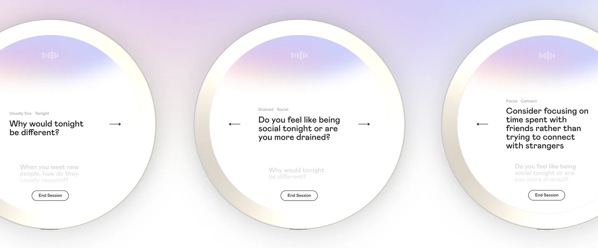
Reflection
A chance to reflect
After you complete a Session, the Stone showcases a visualization of the emotions you felt throughout the Session and the questions and responses that triggered them. Each emotion is tied to a color, teaching you which emotions are tied to which thoughts.
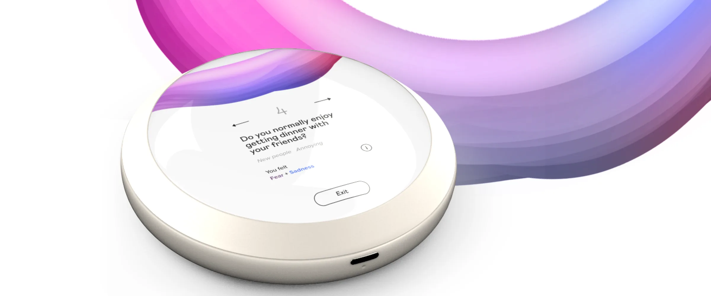
Companion app
Understand your emotional wellbeing
With our paired app, a complete emotional profile is built around you and grows richer as you complete more Sessions. This allows for a deep understanding of how you feel.
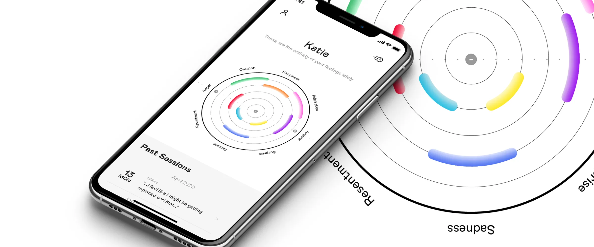
Insights
See your growth and journey
Dive into each emotion and track how feelings fluctuate based on day, time, and even weather. This allows you to reflect and dig deep into why you feel the way you do.
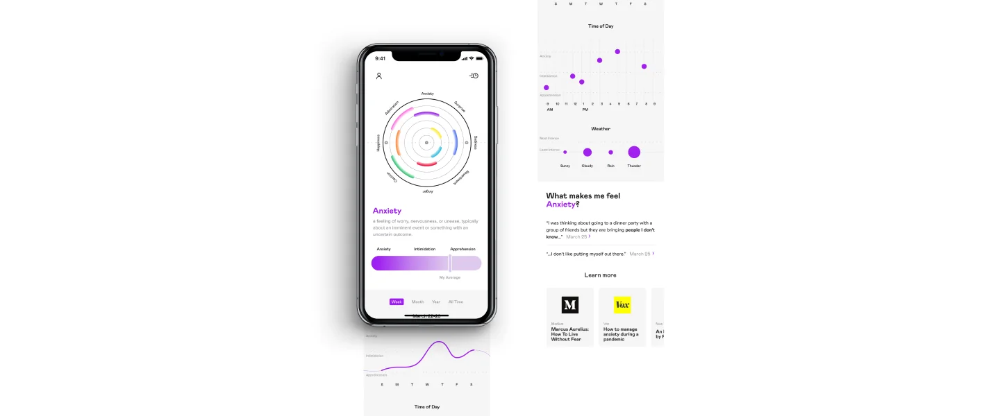
Beyond sessions
More ways to help
Ponder does more than work with your thoughts. It also offers intuitive exercises for your emotions, a way to quickly express your thoughts no matter where you are, and the option to plug your therapist into the platform so they get updates on your emotional wellbeing and can offer better care.
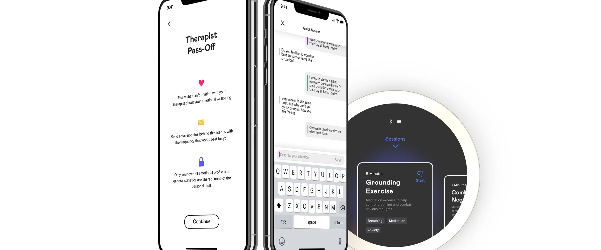
Our process
Process, the short version
Timeline
Ponder was a 20-week project, so we were able to be very thorough with our design process. The first 10 weeks focused on research, finding our problem and solution, and designing a first iteration. The second 10 weeks were used to conduct more interviews, user test, add features and update the design.
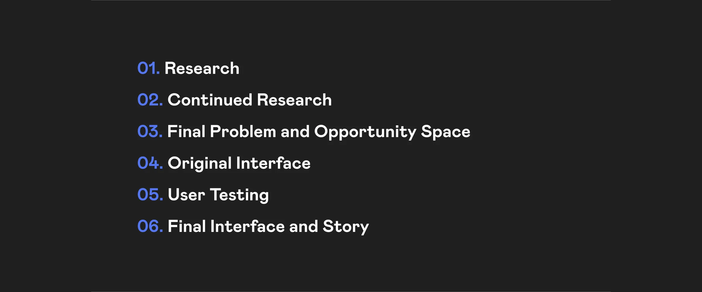
Research
Research methods
We started by researching journals and articles about overthinkers. Once we had a good understanding of the area, we developed a research plan. We sent out a quick survey to see how people felt about products in this space, and conducted a total of 20 interviews. Afterwards we recapped every interview to get the team on the same page, and created an affinity map to find themes. After our first design iteration we conducted 10 more interviews to tie up loose ends, then ran user testing to get feedback on our original designs.
What we learned
One of the most interesting things we found is that overthinkers break situations down into three parts: before, during and after. This was a common theme throughout our research, regardless of what each person overthought about. We also learned that people typically overthink in only one of these three parts, so it was important for us to design a solution for all three.
Ideation
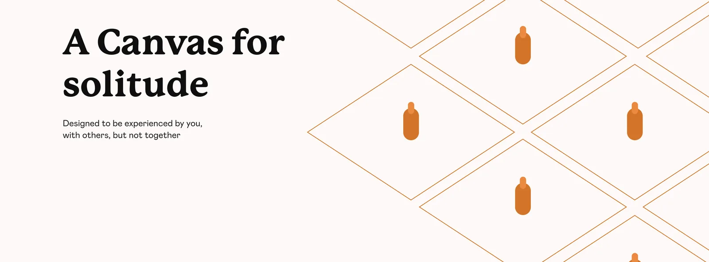
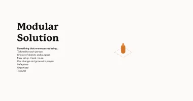
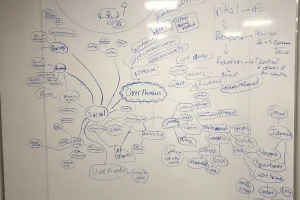
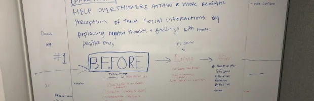
After gathering and analyzing our research, we started ideating. Originally our concepts dealt with an interactive space, but after our initial round of ideation we shifted to a physical device to interact with. We weren’t sure at first what form factor the device would take, but we eventually settled on a small handheld device called the Ponder Stone.
Final product
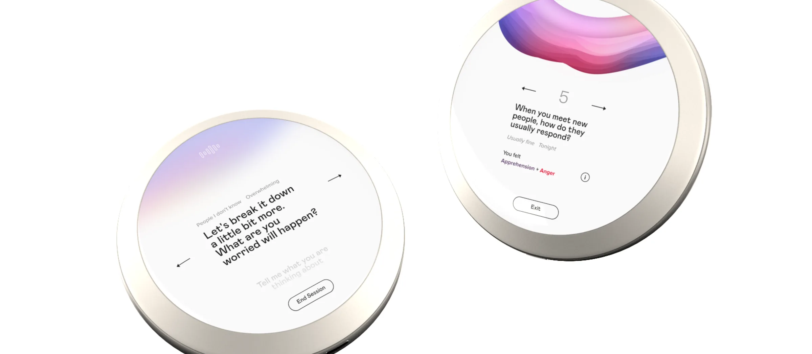
Ponder is a wellness device with a companion app. Guided sessions reframe an overthinker’s thought process to help calm them down. Each session can be recapped, and an emotional profile is built within the app. Users can dive into each of their individual emotions in the app, and do quick sessions whenever they’re away from their Stone. Ponder also has optional therapist integration, so users’ therapists can see their emotional profile too.
What I learned
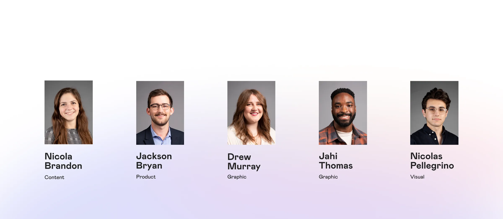
During my time at SCAD, this was the longest project I worked on, covering two quarters (20 weeks). The extra time let us go more in depth than ever before on a school project. After presenting our first design to the class 10 weeks in, we were able to user test, refine, and add features that were missing from the original design. This was the first time I conducted thorough user testing, and hearing from future users helped push our design to the next level.
Want the full story? The process book covers all 20 weeks, including research, ideation, wireframes and final designs.